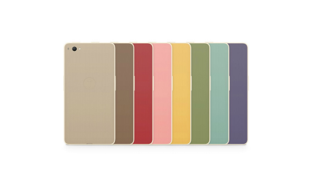
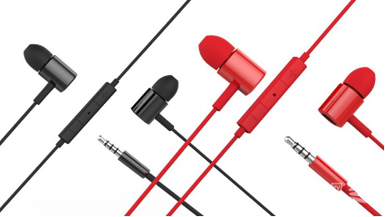
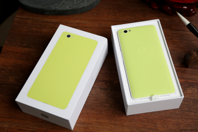
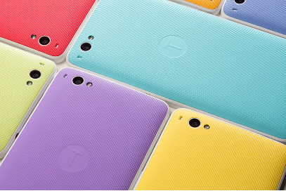
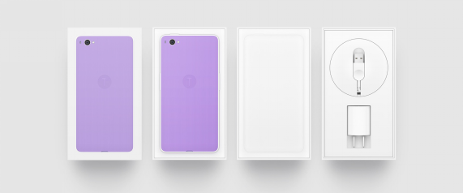

锤子手机那些事儿
by TuC_Studio
喝一杯咖啡，看一个产品，大家好，这里是TuC工作室。
从锤子的工匠精神到坚果年轻人的情怀，老罗确实给我们带来了许多感动，然而继续大力宣扬坚果特别版是不是真的有这个必要呢 ?我们就从最近这场发布会谈起，结合我们上手坚果的体验，和大家一起聊一聊锤子科技的事。
❖ 坚果特别版发布会
➢ 从锤子到坚果
坚果手机是锤子科技的第二款手机产品，T1为代表的T系列无疑是锤子的旗舰系列，而坚果则是一款寄托着情怀与无奈向市场妥协的一款低端机产品。正如我们在之前的文章里提到的，我们一直相信避开技术积累的短板，选用低端机作为自身核心价值的载体来推广自己在软件设计上那些独到的设计进而让消费者真正感受到自己的 “情怀”是锤子科技很明智的战略。我们在使用过程中也觉得，与旗舰机相比，坚果虽然硬件上有差距，但是系统的流畅度上并不影响它成为情怀的载体。
➢ 坚果特别版发布会回顾
这场发布会最大的争议其实就在于，对于一个已经发布过的产品只是在外观上做了些文章就重新定位成针对文艺青年的产品，多少有着炒冷饭、过度宣扬所谓情怀的嫌疑。从老罗一登场开始就在澄清，这只是一场文艺青年的聚会，并不算是一场真正意义上的产品发布会。很显然，罗老师其实也有点心虚啊。对于一场文艺青年的聚会来说，罗老师这场表演的商业化气息实在有点重。关于这一点，罗老师给出的解释是 “场地限制”。因为拿到的场地太大了，为了不浪费资源所以选择和媒体合作，最终打造了一场声势浩大的商业活动。
发布会的主角自然是坚果特别版，然而之际上做出的改动除了内置铃声部分，也只是停留在表面。配色上前面板和中框改为米色，关于这一点罗老师坦言就算是在锤子科技内部的投票中，该配色的支持率也只有18%。另外，手机背壳又推出了8种颜色，同时，在外包装上也引用了日本色卡上的元素来增加 “文艺气息”。

对于打算到这场发布会上来看产品的人来说，真正的高潮还是耳机产品的发布。老罗一直表示自己是个音乐爱好者，给粉丝们推荐过多款耳机，在T1手机上更是对音频调校下了很大功夫，耳机产品的发布也就显得顺理成章。
❖ 回归产品本身
这次入手坚果手机可以算是TuC最曲折的一次购机经历。错过首批线上发售，第二批又没抢到货，直到第三批才买到。之后手机被漂洋过海送到法国，又在海关停留了几个星期，我们拿到手机的时候离坚果发布会差不多已经过去一个月了。
➢ 包装与配件
当下电子产品的包装基本都很精致，已经很难形成差异化了。不过别忘了，这是老罗的手机，如果和别人一样就输了。于是正如他提到的，我们发现即便采用了7种颜色的
背壳以及相应的包装盒，外包装上所印刷出的手机色彩依旧是几乎完美地还原了手机背壳的真实颜色。值得一提的是，手机背壳的色彩能够通过背壳内部所植入的的金属触点与手机屏幕的默认颜色同步，真的很细心呢，可以说是一个小惊喜～
另外，包装盒中还有一个数据线的束线器。这个小东西的加入实际上是让我觉得有一点点鸡肋，我相信许多人的手机充电器都是常年插在插线板上或者放在插线板旁边，第一次开箱之后，恐怕没几个人会再用上这个束线器了。
充电器周围沿用手机背壳的条纹设计显得很和谐，数据线的两端塑料部分上各有一个凹陷，用来区分充电接口的正反。在没有采用Type-C接口升级到“正反皆可插”的状态下，这可以算是一个很不错的折中方案。这一设计在Moto X系列的数据线上已经用了很久了，后者更是直接将插头的一面做成了一个圆润的曲面，客观的说，比坚果的这一设计还要显得更加自然。
➢ 外观与手感
第一眼看到手机可能给人印象最深的还是锤子所坚持的对称式设计，为了保存这一份坚持，即便屏幕被做大了，也没法把电源键放到右侧，只能在系统中允许修改侧键功能来缓解手指的压力。背板设计上采用了经典但是在电子产品上并不常见的条纹设计，搭配7种颜色来配合青春主题。正面板传感器部分依旧被放进了听筒的小圈里面，同时，背板上为了缓解摄像头镜头部位通常并不位于圆圈正中心所带来的视觉感官不和谐，坚果摄像头左侧做了一个开口处理，这种偏执恐怕我们只在几年前从“那个人”身上见到过。
考虑到成本因素，锤子手机底部的三颗实体按键并没有在坚果上出现，然而这一让步反而是避免了用力按压大屏手机底部容易使得握持不稳的问题，也让这样一款有着5.5寸屏的手机得到了更好的握持手感。把这款手机拿在手里的第一感觉就是轻，用官网上的宣传语来说是“轻盈、优雅”，但是却也多少带来了一丝廉价感，暴露了手机价位。
➢ 操作系统体验
发布会上罗老师既然会说锤子科技是一家软件公司，就说明在操作系统上他们是真的下足了功夫。解锁屏幕的一瞬间，不得不承认，主屏幕的解锁动画真的让人觉得精致、漂亮。界面上，Smartisian OS真的没有太多Android的痕迹，图标重绘已经是定制化Android的标配了，没太大强调的必要，Smartisian OS 2.0依旧是采用九宫格图标排布，双指向内滑动切换三十六宫格，用久了之后觉得这个设计比想象的顺手很多，经典Android的使用习惯并没有带来太大的障碍。
系统功能上一些重要的修改罗老师基本都在发布会上展示了，应用程序排序上允许用户选择按照实用频率、安装时间和图标颜色三种排列方式。发布会上罗老师吐槽经典Android应用程序排列混乱，但是我在Nexus 6上使用原生Android 5.1的时候看到，应用程序默认以名字首字母来排序，这一设计其实也是很方便实用的。
滚动截屏功能真的让人觉得眼前一亮，让大家在分享聊天和网页内容时获得了大大的便利。然而发布会上花了很多时间来展示的语音搜索功能，实用性就显得略逊一筹。收到坚果之后除了为了测试功能，我还没有用过它。对着手机说话还是太呆，TuC君依然坚持这一观点：与其执着于增强语音功能，还不如想办法让用户们在使用这一功能时看起来更酷一些。
说到系统缺陷，我最不习惯的就是它对Google服务的支持并不完美。即便自行安装了相关组件，使用体验上依然比原生安卓差了太多。Google Maps定位不准确，而当我试图将Google Drive上的文件分享到微信的时候，手机一直提示失败。这么基本的功能竟然完全不可用，也是让我无言以对。没有了Google服务的Android手机，在我看来，在生态系统搭建上已经完全输给了IOS，在各家巨头力推多平台一体化的当下显得毫无竞争力。此外，Smartisian OS 2.0是基于Android 4.4开发的，然而现在大家已经开始向Android 6.0过渡了，系统的滞后性让一些像TuC君一样的科技爱好者用户心里觉得太别扭。
❖ TuC的建议
总的来讲，我觉得坚果还是一款很值得入手的产品。单凭用心的设计随处可见这一点，TuC君也愿意花这一千块。在迅速迭代的手机市场上，试图以努力打造细节来创造精品的厂家已经越来愈少了。尤其考虑到国内不能使用Google服务，一些我们眼中的问题也就自动被过滤掉了。千元级手机，比较硬件意义并不大，又不是旗舰，何必拿性能做文章。在这一前提下，TuC相信，一款在系统上下足了功夫的手机是不太会让大家失望的。
喝一杯咖啡，看一个产品，这里是TuC工作室。感谢您对我们的关注，欢迎通过微博或微信公众平台获取更多内容。
TuC工作室
公众微信号：TuC_Studio
官方微博：http://weibo.com/tucstudio
欢迎关注！